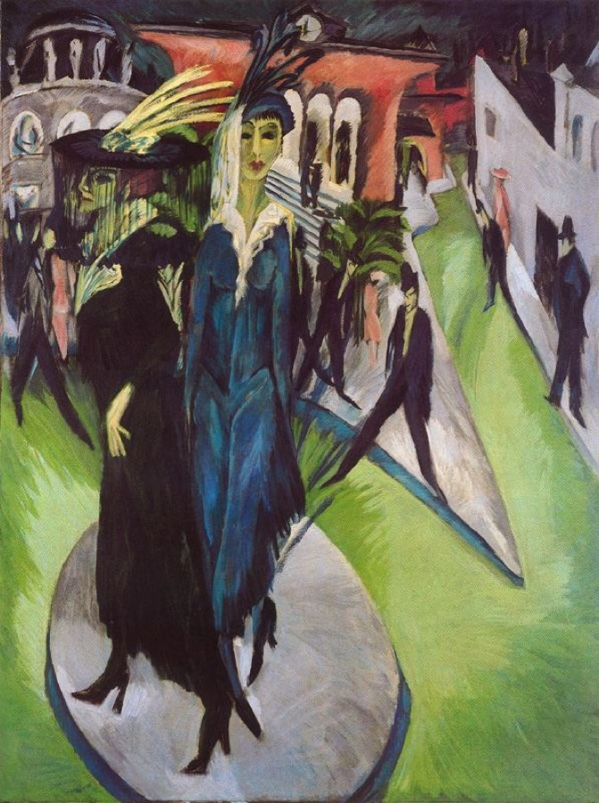
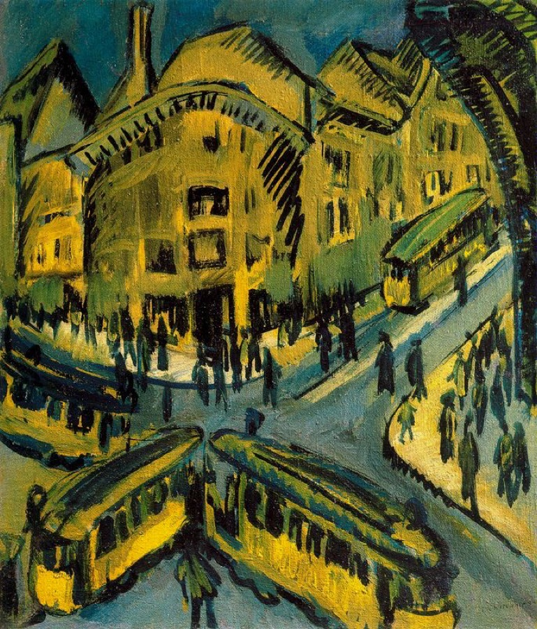
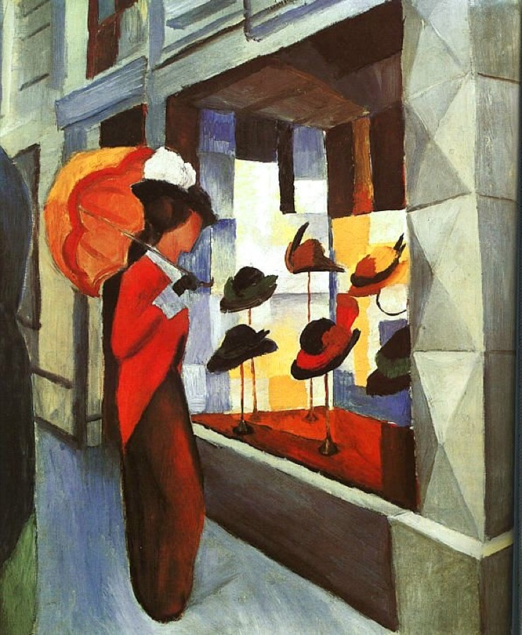

Wo stehen wir – wo geht's hin?
Sechs Wochen lang lest ihr, wie Dichter:innen um 1900–1930 die Großstadt gesehen haben: als Rausch, als Bedrohung, als Einsamkeit mitten im Gedränge. Dabei übt ihr das komplette Handwerkszeug der Gedichtanalyse, das ihr in der Klassenarbeit am 13. Oktober auf ein neues, euch unbekanntes Gedicht anwenden werdet.
Register 02 bis 04
Die Gedichte selbst, das Epochenwissen zum Expressionismus und die passende Malerei dazu.
Register 05
Das Nachschlagewerk: Reimschema, Metrum, Motive, rhetorische Mittel und ausführliche Formulierungshilfen.
Register 06 und 07
Übungskategorien mit Quiz und Kratzkarten sowie eine Werkstatt für eigenes kreatives Schreiben.
Ablaufplan: Deutschstunden bis zu den Herbstferien
Deutsch findet dienstags (Doppelstunde), mittwochs und donnerstags statt, Raum 116. Die Feinplanung der einzelnen Stunden kann sich noch ändern: hier seht ihr die groben Bausteine der Reihe sowie alle bereits feststehenden Termine. Alle Angaben 2026.
Erste Zugänge zur Großstadt
Einstieg ins Thema, Lebensweltbezug, erste Gedichte (u. a. Kästner, Storm): dabei wird das Handwerkszeug für die Analyse Schritt für Schritt aufgebaut: Gedichtform, Reimschema, Metrum, Motivarten, Sinneswahrnehmung.
Epoche Expressionismus & Kerngedicht
Epochenwissen zum Expressionismus wird erarbeitet und an Wolfensteins „Städter“ als zentralem Gedicht angewendet: inklusive des vollständigen Aufbaus einer Gedichtanalyse.
Üben & Vorbereitung
Eigenständiges Analysieren an Tucholsky, dann die Probeklassenarbeit samt Besprechung (Termine siehe unten) und letzte gezielte Wiederholung des Handwerkszeugs.
Unsere expressionistischen Gedichte
„Dass ich es nicht lassen kann, bei offenem Fenster zu schlafen. Elektrische Bahnen rasen läutend durch meine Stube. Automobile gehen über mich hin. Eine Tür fällt zu. Irgendwo klirrt eine Scheibe herunter, ich höre ihre großen Scherben lachen, die kleinen Splitter kichern. Dann plötzlich dumpfer, eingeschlossener Lärm von der anderen Seite, innen im Hause. Jemand steigt die Treppe. Kommt, kommt unaufhörlich. Ist da, ist lange da, geht vorbei. Und wieder die Straße.“
Genau dieses Gefühl der Reizüberflutung steht im Zentrum unserer Reihe: zwei Gedichte aus dem Expressionismus (ca. 1910–1925), die die Großstadt auf ganz unterschiedliche, aber typisch expressionistische Weise zeigen.
Alfred Wolfenstein: „Städter“
Dicht wie Löcher eines Siebes stehn Fenster beieinander, drängend fassen Häuser sich so dicht an, daß die Straßen Grau geschwollen wie Gewürgte stehn. Ineinander dicht hineingehakt Sitzen in den Trams die zwei Fassaden Leute, wo die Blicke eng ausladen Und Begierde ineinander ragt. Unsre Wände sind so dünn wie Haut, Daß ein jeder teilnimmt, wenn ich weine. Flüstern dringt hinüber wie Gegröhle: Und wie stumm in abgeschlossner Höhle Unberührt und ungeschaut Steht doch jeder fern und fühlt: alleine.
Ein Sonett, das die Paradoxie der Großstadt auf den Punkt bringt: große räumliche Nähe (Häuser, Fenster, Wände „dünn wie Haut“) und trotzdem völlige Einsamkeit. Die stark verdichteten Bilder machen räumlichen und seelischen Druck sichtbar, ein typischer expressionistischer Zugriff.
Alfred Lichtenstein: „Gesänge an Berlin“
Ein Abschiedsgedicht an Berlin: „O du Berlin, du bunter Stein, du Biest“: die Stadt wird gleichzeitig verflucht und geliebt, als „Opiumrausch“ und als Zuhause, das man verlassen muss. Ein zweites Beispiel dafür, wie widersprüchlich das lyrische Ich die Großstadt erleben kann.
Epochenüberblick: Wo steht der Expressionismus?
Literarische Epochen sind keine scharf getrennten Kästchen, sondern Hilfskonstruktionen, die das Lernen erleichtern: echte Grenzen sind fließend. Der Maler Franz Marc beschrieb 1912 die neue Kunst seiner Zeit als „Feuerzeichen von Wegsuchenden“: erste, oft widersprüchliche Signale einer Generation, die nach etwas Neuem sucht. Damit ihr den Expressionismus trotzdem einordnen könnt, hier ein grober Überblick: mit Blick auf die beiden Nachbar-Epochen, aus denen unsere Vergleichsgedichte stammen.
Realismus
Blick auf die Stadt: die kleine, überschaubare Heimatstadt statt der anonymen Großstadt.
Sprache: ruhiger Ton, geordnetes Reimschema, melancholisch-liedhaft.
Beispiel bei uns: Storm, „Die Stadt“ (1852).
Expressionismus
Blick auf die Stadt: die Großstadt (v. a. Berlin) als Ort der Reizüberflutung, Anonymität und Einsamkeit im Gedränge.
Sprache: Reihungsstil, aufgebrochene Formen, drastische Vergleiche, Farbmetaphorik.
Beispiel bei uns: Wolfenstein, „Städter“ (1914); Lichtenstein, „Gesänge an Berlin“ (1913).
Neue Sachlichkeit
Blick auf die Stadt: nüchterner, oft ironisch-kritischer Blick auf Tempo, Technik und soziale Gegensätze der modernen Großstadt.
Sprache: klare, oft liedhafte Formen, Alltagssprache, pointierter Schluss.
Beispiel bei uns: Kästner, „Besuch vom Lande“ (1930); Tucholsky, „Augen in der Großstadt“ (1930, Grenzfall).
Selbst Fachleute sind sich nicht immer einig: Tucholskys Gedicht wird mal der Neuen Sachlichkeit, mal einem „Spätexpressionismus“ zugerechnet. Wichtiger als die exakte Schublade ist, dass ihr die Merkmale aus Register 03 an einem Text konkret zeigen könnt.
Im Kontrast gelesen
Diese drei Texte stammen nicht aus dem Expressionismus: wir lesen sie bewusst als Vergleichsfolie, um zu sehen, was am Expressionismus wirklich besonders ist.
Theodor Storm: „Die Stadt“
Am grauen Strand, am grauen Meer Und seitab liegt die Stadt; Der Nebel drückt die Dächer schwer, Und durch die Stille braust das Meer Eintönig um die Stadt. Es rauscht kein Wald, es schlägt im Mai Kein Vogel ohn Unterlaß; Die Wandergans mit hartem Schrei Nur fliegt in Herbstesnacht vorbei, Am Strande weht das Gras. Doch hängt mein ganzes Herz an dir, Du graue Stadt am Meer; Der Jugend Zauber für und für Ruht lächelnd doch auf dir, auf dir, Du graue Stadt am Meer.
Keine Großstadt, sondern die enge, graue Heimatstadt an der Küste (Storms Husum). Trainingsstrecke für Sinneswahrnehmung, lyrisches Ich/Du und Stilmittel: bevor es in die Großstadt des Expressionismus geht.
Erich Kästner: „Besuch vom Lande“
Kästners Gedicht ist urheberrechtlich geschützt und liegt euch als Kopie im Unterricht vor. Kurz zum Inhalt: Menschen vom Land stehen „verstört am Potsdamer Platz“: geblendet vom Licht, überfordert vom Lärm, „bis man sie überfährt“. Kästner beschreibt die Großstadt nicht direkt, sondern über die Reaktionen der Besucher.
Kurt Tucholsky: „Augen in der Großstadt“
Wenn du zur Arbeit gehst am frühen Morgen, wenn du am Bahnhof stehst mit deinen Sorgen: da zeigt die Stadt dir asphaltglatt im Menschentrichter Millionen Gesichter: Zwei fremde Augen, ein kurzer Blick, die Braue, Pupillen, die Lider – Was war das? vielleicht dein Lebensglück … vorbei, verweht, nie wieder. Du gehst dein Leben lang auf tausend Straßen; du siehst auf deinem Gang, die dich vergaßen. Ein Auge winkt, die Seele klingt; du hast's gefunden, nur für Sekunden … Zwei fremde Augen, ein kurzer Blick, die Braue, Pupillen, die Lider – Was war das? Kein Mensch dreht die Zeit zurück … Vorbei, verweht, nie wieder. Du mußt auf deinem Gang durch Städte wandern; siehst einen Pulsschlag lang den fremden Andern. Es kann ein Feind sein, es kann ein Freund sein, es kann im Kampfe dein Genosse sein. Er sieht hinüber und zieht vorüber … Zwei fremde Augen, ein kurzer Blick, die Braue, Pupillen, die Lider – Was war das? Von der großen Menschheit ein Stück! Vorbei, verweht, nie wieder.
Kurze Verse und ein fast liedhafter Refrain tragen das Thema von Vereinsamung und Verlust in der Menschenmenge. Passt Tucholsky eher zum Expressionismus oder zur Neuen Sachlichkeit? Genau diese Einordnungsfrage üben wir gemeinsam.
Epoche: der Expressionismus (ca. 1910–1925)
Das komplette Merkwissen zur Epoche: genau das, was in der Klassenarbeit in die Gedichtanalyse eingebaut werden muss. Prägt euch besonders die fett gesetzten Begriffe ein.
Hintergründe
- Verstädterung und Anonymisierung, technischer Fortschritt, erstarrte wilhelminische Gesellschaft → verschärftes Krisenbewusstsein, Sinnkrise
- Der Erste Weltkrieg verstärkte dieses Krisenbewusstsein zusätzlich und wurde für viele Expressionist:innen zur traumatischen Erfahrung
- Die Haltung zum Krieg war nicht einheitlich: Manche Autoren begrüßten ihn zunächst als vermeintliche Erneuerung, andere waren von Anfang an skeptisch oder ablehnend. Nach eigener Fronterfahrung entwickelte sich bei zahlreichen von ihnen eine deutlich pazifistische, antimilitaristische Haltung
Haltung & Pathos
- Pathos des Aufbruchs und unbedingter Wille zum Ausdruck des Erlebens (daher „Expressionismus“)
- Bedrohung des Subjekts durch Ich-Krise, Identitätsverlust und Entfremdung: der Körper wird dabei oft als zerfallend, krank, deformiert oder entmenschlicht dargestellt, allerdings nicht in jedem Text gleichermaßen
- Bei manchen Autoren (u. a. beeinflusst von Nietzsche, z. B. in Kurt Pinthus' Anthologie „Menschheitsdämmerung“): pathetische Beschwörung eines „neuen Menschen“, der Liebe und Verbrüderung lebt: diese „O-Mensch!“-Haltung lässt sich aber nicht auf den gesamten Expressionismus verallgemeinern
Zentrale Themen
- Stadt (v. a. Berlin): Faszination und Abstoßung zugleich: die jungen Dichter waren selbst Nachtschwärmer in Cafés, Kinos und Bars, keine distanzierten Kritiker von außen
- Apokalypse & Untergang: ein zentrales Motiv: der Untergang der alten Ordnung erscheint nicht nur als Katastrophe, sondern zugleich als Voraussetzung für einen möglichen Neuanfang
- Vergänglichkeit: Zerfall, Krankheit, Tod, Zerstörung. Anders als das Vanitas-Motiv im Barock ist dies nicht zwingend religiös gedeutet: es gibt aber durchaus auch expressionistische Texte mit religiösen, apokalyptischen oder messianischen Vorstellungen
- Entfremdung & Isolation: Einsamkeit, Anonymität, Orientierungslosigkeit, Identitätsverlust: eng verbunden mit der Großstadterfahrung und der Ich-Krise
- Neuer Mensch: die Hoffnung, aus dem Zerfall der alten Gesellschaft könne ein solidarischerer Mensch entstehen (siehe oben)
Sprache & Stil
- Reihungsstil: Substantivreihungen, Aufzählungen, schnelle Bildwechsel, oft ohne logische Verknüpfung: in der Klausur gut nachweisbar, weil an konkreten Textmerkmalen erkennbar
- Neologismen und eine intensive Farb- und Bildsprache: vor allem in der Malerei zentral (Register 04 „Kunst“). Feste Regeln wie „Blau = Sehnsucht“ oder „Rot = Gefahr“ gibt es dabei nicht; die Farbwirkung muss immer am konkreten Gedicht gedeutet werden
- Auflösung syntaktischer Regeln, Verdinglichung (Menschen werden wie Dinge, Dinge wie Menschen beschrieben)
- Aufbrechen traditioneller Formen: Strophen-, Reim- und Versmaße werden häufig verändert, reduziert oder durch freie Rhythmen ersetzt: ein bewusstes Gestaltungsmittel, keine bloße „Formlosigkeit“: Expressionist:innen nutzen auch gezielt strenge Formen wie das Sonett (siehe Wolfensteins „Städter“, Register 02)
- Groteske & Deformation: Körper und Wirklichkeit werden häufig verzerrt, übersteigert oder grotesk dargestellt: besonders stark in der bildenden Kunst, aber auch in der Literatur
Wie alles anfing
Begriff und Großstadtwachstum
Der Begriff „Expressionismus“ wurde 1911 im Katalog der Berliner Secession als Bezeichnung für moderne Malerei besonders bekannt. Schon zuvor war das Wort vereinzelt verwendet worden. Kurz darauf wurde es auch auf Literatur übertragen. Das erklärt, warum Malerei und Dichtung der Epoche so eng zusammengehören (mehr dazu in Register 04 „Kunst“).
Ein wichtiger Hintergrund: Berlin wuchs von rund 420.000 Einwohner:innen im Jahr 1850 auf über 2 Millionen im Jahr 1910: eine Verstädterung in nie gekanntem Tempo, die die jungen Dichter faszinierte und überforderte zugleich.
Brücke-Manifest und „Der Sturm“
1906 veröffentlichte die junge Dresdner Künstlergruppe „Die Brücke“ (u. a. Kirchner) ihr Manifest als Holzschnitt: ein Aufbruch der Jugend gegen die „wohlangesessenen älteren Kräfte“:
„Jeder gehört zu uns, der unmittelbar und unverfälscht wiedergibt, was ihn zum Schaffen drängt.“
Zentrales Publikationsorgan der Epoche war die Zeitschrift „Der Sturm“ (Herausgeber: Herwarth Walden), in der viele expressionistische Gedichte zuerst erschienen.
Das Gedicht, das die Epoche mitbegründete
Jakob van Hoddis' „Weltende“ (1911) gilt als eines der ersten und bekanntesten Gedichte der Epoche. Auffällig ist der Simultanstil: Mehrere unabhängige Ereignisse werden so aneinandergereiht, als geschähen sie gleichzeitig. Der häufige Zeilenstil, bei dem Satz- und Versende zusammenfallen, unterstützt diesen Eindruck, ist aber nicht dasselbe Stilmerkmal.
Dem Bürger fliegt vom spitzen Kopf der Hut, In allen Lüften hallt es wie Geschrei, Dachdecker stürzen ab und gehn entzwei Und an den Küsten – liest man – steigt die Flut. Der Sturm ist da, die wilden Meere hupfen An Land, um dicke Dämme zu zerdrücken. Die meisten Menschen haben einen Schnupfen. Die Eisenbahnen fallen von den Brücken.
Ausprobieren: Ist die Reihenfolge wirklich beliebig?
Auf den ersten Blick wirken die acht Zeilen fast austauschbar. Bringt sie in eine sinnvolle Reihenfolge und vergleicht sie anschließend mit van Hoddis' Original. Am Desktop könnt ihr die Zeilen ziehen; auf Touch-Geräten wählt ihr sie nacheinander aus.
Auch wichtig, aber nicht Reihenschwerpunkt
Der Expressionismus prägte auch die Dramatik: mit dem Stationendrama (lose Szenenfolge ohne strengen Handlungsbogen) und dem Wandlungsdrama (die innere Wandlung eines Einzelnen steht im Zentrum). In unserer Reihe liegt der Fokus auf der Lyrik, aber diese Begriffe solltet ihr wiedererkennen.
Kunst des Expressionismus
Der Begriff „Expressionismus“ wurde 1911 durch einen Ausstellungskatalog für moderne Malerei besonders bekannt und bald darauf auch auf Literatur übertragen. Malerei und Lyrik der Epoche verbindet die Suche nach unmittelbarem Ausdruck statt genauer Abbildung.
„Die Brücke“ (Dresden, ab 1905)
Kirchner, Heckel, Schmidt-Rottluff und andere arbeiten mit kantigen, holzschnittartigen Formen sowie grellen, unnatürlichen Farben. Ihr oft nervöser und bedrängender Blick auf die nächtliche Großstadt passt gut zu Wolfensteins „Städter“.
„Der Blaue Reiter“ (München, ab 1911)
Kandinsky, Marc, Macke und weitere Künstler. Tendenz zur Abstraktion und starke Farbwirkung. Blau kann bei einzelnen Werken für Geistiges oder Sehnsucht stehen, muss aber immer am Bild begründet werden. Die 1924 von Galka Scheyer vermarktete Gruppe „Die Blaue Vier“ mit Kandinsky, Jawlensky, Klee und Feininger war eine spätere, eigenständige Verbindung.
Zwei Berliner Stadtbilder und ein Vergleichsbild
Die beiden Kirchner-Gemälde zeigen Berlin. Mackes „Hutladen“ entstand 1913 in Hilterfingen am Thunersee und dient als bewusster Vergleich. Die Abbildungen sind gemeinfrei und stammen von Wikimedia Commons.

Kirchner: „Potsdamer Platz“ (1914)
Zwei sogenannte Kokotten, eine historische Bezeichnung für Prostituierte, stehen auf einer Verkehrsinsel. Spitze Formen und grelles Kunstlicht lassen denselben Ort nervös und bedrohlich wirken, an dem Kästners Besucher später „verstört“ stehen.
Öl auf Leinwand · Neue Nationalgalerie, Berlin · gemeinfrei

Kirchner: „Nollendorfplatz“ (1912)
Enge, kippende Perspektive, dicht gedrängte Menschen und Bahnen. Das Bild wirkt wie eine gemalte Entsprechung zu Wolfensteins „Dicht wie Löcher eines Siebes“.
Öl auf Leinwand · gemeinfrei

Macke: „Hutladen“ (1913)
Hellere Farben und eine ruhigere Alltagsszene zeigen, dass moderne Stadterfahrung in der expressionistischen Kunst nicht immer bedrohlich erscheint.
Hilterfingen am Thunersee · Sammlung Lenbachhaus, München · gemeinfrei
Bild und Zitat zuordnen
Handwerkszeug: das komplette Nachschlagewerk
Alles, was ihr für die formale und sprachliche Analyse eines Gedichts braucht: an einem Ort. Klappt die Kästen auf, wenn ihr etwas nachschlagen wollt.
Aufbau einer Gedichtanalyse und -interpretation
Analysieren bedeutet, die Einzelheiten eines Gedichts zu untersuchen (Inhalt, Sprache, formaler Aufbau). Interpretieren bedeutet, diese Details zu deuten: über das wörtlich Gesagte hinauszugehen.
- Überschrift: drückt aus, dass und worüber du eine Analyse schreibst.
- Einleitung: Titel, Autor:in, Erscheinungsjahr, Thema, Deutungshypothese zur Fragestellung.
- Hauptteil I: Grundlagen: formale Beschreibung (Strophen, Verse, Reimschema, ggf. Metrum) · lyrisches Ich/Du bestimmen · Motive nennen (noch nicht deuten, indirekt zitieren reicht).
- Hauptteil II: Deutung: Sinneswahrnehmungen analysieren (direkt zitieren!) · Stilmittel nennen, erklären, deuten (3–4 besonders wichtige auswählen) · direkt interpretieren · Epochenbezug einbauen.
- Prüfung der Deutungshypothese: bestätigt sich deine These aus der Einleitung?
- Schluss: die Fragestellung persönlich beantworten, eigene Wahrnehmung mit der des lyrischen Ichs vergleichen.
Formaler Aufbau: Strophe, Vers, Reimschema
Ein Gedicht besteht aus Strophen, eine Strophe aus Versen (Zeilen). Zwei Wörter reimen sich, wenn sie vom letzten betonten Vokal an gleich klingen.
| Reimschema | Notation | Erklärung |
|---|---|---|
| Kreuzreim | abab | 1. und 3. Vers reimen sich, 2. und 4. Vers reimen sich über Kreuz. |
| Paarreim | aabb | Zwei aufeinanderfolgende Verse reimen sich. |
| Umschließender Reim | abba | Ein Paarreim wird von zwei sich reimenden Versen umschlossen. |
| Haufenreim | aaaa | Alle Verse einer Strophe reimen sich auf denselben Reim. |
| Verschränkter Reim | abcabc | Zwei Dreiergruppen reimen sich parallel zueinander. |
Metrum (Versmaß)
Spricht man eine Gedichtzeile, wechseln sich betonte (Hebung, ˊ) und unbetonte Silben (Senkung, ˘) ab. Dieser Takt heißt Metrum.
| Versmaß | Muster | Beispiel |
|---|---|---|
| Jambus | ˘ ˊ ˘ ˊ … | Es schlúg mein Hérz geschwínd zu Pférde |
| Trochäus | ˊ ˘ ˊ ˘ … | Hát der álte Héxenméister |
| Anapäst | ˘ ˘ ˊ ˘ ˘ ˊ … | Schenke gróß oder kléin |
| Daktylus | ˊ ˘ ˘ ˊ ˘ ˘ … | Hímmlisches Lében im bláuen Gewánde |
Wichtig für den Expressionismus: Viele expressionistische Gedichte durchbrechen bewusst ein regelmäßiges Metrum: das ist selbst schon eine Deutung wert (bewusstes Aufbrechen der Form als Ausdruck von Chaos/Reizüberflutung)! Andere Gedichte, z. B. Wolfensteins „Städter“, nutzen dagegen ganz bewusst eine strenge Form wie das Sonett.
Lyrische Grundformen: Ballade, Sonett, Lied
Lied
Sangbares Gedicht mit durchgängig gleicher Strophenform, alternierende Verse mit Kreuz- oder Paarreim, schlichte Sprache. Oft unmittelbarer Ausdruck von Empfindungen: besonders beliebt in der Romantik.
Ballade
Erzählgedicht: Auf lebendige Weise wird eine Geschichte erzählt. Formal: Strophen, Verse, Reime, Metrum; oft wörtliche Rede; inhaltlich ein spannender Handlungsverlauf. Vereint Lyrik, Epik und Dramatik.
Sonett
Sprachlich und formal kunstvoll: in der Regel zwei Quartette (vierzeilige Strophen) gefolgt von zwei Terzetten (dreizeilige Strophen). Häufig inhaltlicher Gegensatz zwischen Quartetten und Terzetten: die letzten Verse wirken oft wie eine Pointe.
Wolfensteins „Städter“ hat die Strophenform eines Sonetts (4-4-3-3-Verse): prüft in Register 02, ob auch das Reimschema und der inhaltliche Umschlag zwischen Quartetten und Terzetten passen!
Lyrisches Ich, lyrisches Du & verdeckte Sprecher:in
Lyrisches Ich: die fiktive Sprecher:in eines Gedichts: nicht mit der Autor:in zu verwechseln. Erkennbar an Personal-/Possessivpronomen der 1. Person, Verbformen, Anreden, Ausrufen, Wünschen, Fragen.
Lyrisches Du: der Adressat des Gedichts: das kann sein: (a) eine unbestimmte Person, (b) ein bestimmtes Wesen (Gott, eine bestimmte Person, ein personifizierter Gegenstand), (c) die Leser:in, (d) das lyrische Ich selbst (Selbstgespräch), oder (e) die Gesellschaft im Allgemeinen.
Verdeckte Sprecher:in: Manche Gedichte machen keine Aussage über ein Ich, sondern nur über andere: dann fehlen Personal-/Possessivpronomen, an denen man ein lyrisches Ich erkennen würde.
Motivarten
Thematik = Inhalt des Gedichts (nicht am Titel festmachen: der kann irreführend sein!). Motiv = ein thematisches Element, das im Text (wiederholt) auftritt.
Die folgende Einteilung in fünf Motivarten folgt dem im Unterricht verwendeten Modell. In der Literaturwissenschaft existieren auch andere Einteilungen.
| Motivart | Definition | Beispiele |
|---|---|---|
| Situationsmotiv | bringt Lebenssituationen/Vorgänge zur Sprache, ohne sie zu erzählen | Ankunft, Abschied, Begegnung, Wartensituation |
| Raummotiv | Orte, über die gesprochen wird | Meer, Straße, Zimmer, Großstadt |
| Typenmotiv | nicht näher bezeichnete Personen(gruppen) | die Geliebte, der Fremde, die Menge |
| Stoffmotiv | namentlich bekannte Personen/Figuren mit bestimmtem Ereignis/Konflikt | Noah, Robinson Crusoe, Karl der Große |
| Zeitmotiv | Sprechzeitpunkt bzw. thematisch zentrale Zeiträume | Dämmerung, Nacht, Herbst, Morgen |
Sinneswahrnehmungen
Motive werden in Gedichten oft über unterschiedliche Wahrnehmungsebenen beschrieben:
Rhetorische Mittel: die große Übersicht
a) Wortfiguren & Tropen (bildliche Rede)
| Begriff | Erklärung | Beispiel |
|---|---|---|
| Euphemismus | beschönigender Ausdruck, wertet einen (oft negativen) Sachverhalt auf | „einschlafen“ für sterben |
| Hyperbel | Übertreibung, vergrößernd oder verkleinernd | „Er log, dass sich die Balken biegen.“ |
| Ironie | der Kontext macht klar: das Gegenteil ist gemeint | „Prima Arbeit!“ (für eine schlechte Klausur) |
| Litotes | Verneinung des Gegenteils | „eine nicht untüchtige Hilfe“ |
| Metonymie | ein Begriff wird durch einen anderen ersetzt, der real damit zusammenhängt | „Berlin entscheidet“ |
| Synekdoche | Sonderform der Metonymie: Teil steht für Ganzes (o. umgekehrt) | „unter vier Augen“ |
| Vergleich | zwei Bereiche werden über wie/als verbunden (A wie B) | „Sie kämpft wie ein Löwe.“ |
| Metapher | Übertragung ohne wie/als: das Gemeinte A wird durch B bezeichnet | „eine Mauer des Schweigens“ |
| Symbol | anschauliches, konventionell gebundenes Sinnbild | Herz für Liebe |
| Allegorie | bildhaft belebte Darstellung eines abstrakten Begriffs | Justitia für Gerechtigkeit |
| Synästhesie | Verbindung unterschiedlicher Sinneseindrücke | „Golden wehen die Töne nieder.“ |
| Personifikation | Vermenschlichung einer Idee/Sache | „Der Garten trauert.“ |
| Neologismus | Wortneuschöpfung | „Menschentrichter“ (Tucholsky) |
| Aufzählung | Reihung von Begriffen | „günstige Lage, gesunde Luft …“ |
| Akkumulation | Reihung von Begriffen zu einem (nicht) genannten Oberbegriff | „Herz! Liebe! Gott!“ |
b) Satz- & Lautfiguren
| Begriff | Erklärung | Beispiel |
|---|---|---|
| Alliteration | gleiche Anfangskonsonanten aufeinanderfolgender Wörter | „unberührt und ungeschaut“ |
| Onomatopoesie | Lautmalerei | „Kuckuck“, „rascheln“ |
| Anapher | Wiederholung derselben Wörter am Satz-/Versanfang | „Am grauen Strand, am grauen Meer“ (Storm) |
| Chiasmus | Kreuzstellung entsprechender Satzglieder | „Der Lehrer war fleißig; faul war der Schüler.“ |
| Ellipse | Auslassung eines Wortes ohne Sinnverlust | „Was nun?“ |
| Inversion | Wortumstellung zur Hervorhebung | „Groß ist er.“ |
| Klimax | steigernde Reihung, letztes Element = Höhepunkt | „Ich kam, ich sah, ich siegte!“ |
| Parallelismus | gleiche Satzgliedfolge in aufeinanderfolgenden Sätzen | „Heiß ist die Liebe, kalt ist der Schnee.“ |
| Enjambement | ein Satz läuft über das Versende hinaus (Zeilensprung) | „Dicht wie Löcher eines Siebes stehn / Fenster …“ (Wolfenstein) |
| Kehrreim / Refrain | wiederkehrende Versgruppe oder Strophe | „Zwei fremde Augen … Vorbei, verweht, nie wieder.“ (Tucholsky) |
c) Gedankenfiguren
| Begriff | Erklärung | Beispiel |
|---|---|---|
| Anrede / Personalpronomen | Einbeziehung der Leser:in/Zuhörer:in | „Wenn du zur Arbeit gehst …“ (Tucholsky) |
| Antithese | ausgeprägter Kontrast, Gegenüberstellung logisch entgegengesetzter Begriffe | „Himmel und Hölle“ |
| Oxymoron | zwei sich dem Wortsinn nach widersprechende Wörter | „beredtes Schweigen“ |
| Paradox(on) | überspitzte, scheinbar widersinnige Formulierung | „Gott ruht im Wirken.“ |
| Tautologie | Wiederholung ohne inhaltlichen Zuwachs | „schwarzer Rabe“ |
| Rhetorische Frage | Scheinfrage, Antwort steht bereits fest | „Ist das nicht ein Skandal?“ |
Mini-Beispiel: vom Beleg zur Deutung
Dicht wie Löcher eines Siebes stehn Fenster beieinander
- Beobachtung: Die Fenster stehen sehr eng beieinander.
- Stilmittel: Der Vergleich „wie Löcher eines Siebes“ (Z. 1) macht die dichte Anordnung anschaulich.
- Wirkung: Das Bild lässt die Häuser gleichförmig, gedrängt und nahezu undurchlässig erscheinen.
- Deutung: Die räumliche Enge spiegelt den Druck der Großstadt und bereitet den Gegensatz zwischen körperlicher Nähe und innerer Isolation vor.
Merksatz: Nicht beim Benennen des Stilmittels stehen bleiben. Immer Beobachtung, Beleg, Wirkung und Deutung miteinander verbinden.
Formulierungshilfen für die Analyse
Einleitung
- „Das Gedicht ‚Titel' von [Autor:in] aus dem Jahr … thematisiert …“
- „Im Zentrum des Gedichts ‚Titel' (Autor:in, Jahr) steht …“
- „[Autor:in] beschreibt in seinem/ihrem Gedicht ‚Titel' (Jahr) …“
- „Bereits der Titel ‚…' deutet an, dass …“
- „Zu prüfen ist im Folgenden die These, dass …“
Formale Analyse
- „Das Gedicht besteht aus x Strophen mit je y Versen.“
- „Auffällig ist, dass sich die Verszahl in Strophe … ändert: dies könnte …“
- „Das Reimschema folgt einem regelmäßigen/unregelmäßigen … reim.“
- „Das Metrum lässt sich als … bestimmen, wird jedoch in Vers … durchbrochen.“
Inhalt zusammenfassen
- „In der ersten Strophe wird … geschildert.“
- „Im weiteren Verlauf des Gedichts verändert sich …“
- „Zentrales Motiv ist …, das sich als … (Motivart) beschreiben lässt.“
- „Das lyrische Ich tritt als … in Erscheinung und wendet sich an …“
Sprachliche Analyse & Zitieren
- „Auffällig ist der Gebrauch von … (Stilmittel) in Vers …: ‚Zitat' (Z. …).“
- „Durch den Vergleich ‚…' (Z. …) wird … veranschaulicht.“
- „Die Häufung von … (z. B. Adjektiven/Verben) in Z. … erzeugt den Eindruck von …“
- „Der Wechsel von … zu … (z. B. kurzen zu langen Sätzen) unterstreicht …“
- „Bereits das Verb ‚…' (Z. …) verrät, dass …“
Deutung & Interpretation
- „Dies lässt sich so deuten, dass …“
- „Damit wird deutlich, dass das lyrische Ich …“
- „Die Wirkung dieses Stilmittels besteht darin, dass …“
- „Auffällig ist der Kontrast zwischen … und …, der …“
- „Dahinter lässt sich die Aussage vermuten, dass …“
Epochenbezug (wichtig für die Klassenarbeit!)
- „Typisch für den Expressionismus ist hier …“
- „Damit reiht sich das Gedicht in die für den Expressionismus charakteristische Thematik … ein.“
- „Im Unterschied zu … (Nachbarepoche) zeigt sich hier …“
- „Die … (z. B. Reihung, Ellipse) ist ein sprachliches Mittel, das für den Expressionismus typisch ist, weil …“
Schluss
- „Die Deutungshypothese aus der Einleitung bestätigt sich …/lässt sich nur teilweise bestätigen, da …“
- „Mit der Aussage des Gedichts weist [Autor:in] besonders auf … hin.“
- „Auch heute lässt sich diese Erfahrung nachvollziehen, wenn/weil …“
- „Für mich persönlich …“
Üben & Ausprobieren
Wählt eine Kategorie. Überall gibt es Quiz mit direktem Feedback: bei den rhetorischen Mitteln und den Motiven zusätzlich Kratzkarten: Überlegt euch erst die Antwort, dann mit der Maus oder dem Finger freikratzen!
Reimschema-Rätsel
Metrum-Trainer
Quiz: Stilmittel erkennen
Kratzkarten: Welches Stilmittel steckt hier drin?
Quiz: Motivarten zuordnen
Kratzkarten: Welche Motivart ist das?
Epoche-Check
Schreibwerkstatt: eigene Analyse ausprobieren
Ein sicherer Übungstext, der nicht in der Klassenarbeit vorkommt: Alfred Lichtensteins „Gesänge an Berlin“ (1913).
O du Berlin, du bunter Stein, du Biest. Du wirfst mich mit Laternen wie mit Kletten. Ach, wenn man nachts durch deine Lichter fließt Den Weibern nach, den seidenen, den fetten. So taumelnd wird man von den Augenspielen. Den Himmel süßt der kleine Mondbonbon. Wenn schon die Tage auf die Türme fielen, Glüht noch der Kopf, ein roter Lampion. Bald muss ich dich verlassen, mein Berlin. Muss wieder in die öden Städte ziehn. Bald werde ich auf fernen Hügeln sitzen In dicke Wälder deinen Namen ritzen. Leb wohl, Berlin, mit deinen frechen Feuern. Lebt wohl, ihr Straßen voll von Abenteuern. Wer hat wie ich von eurem Schmerz gewusst. Kaschemmen, ihr, ich drück euch an die Brust. In Wiesen und in frommen Winden mögen Friedliche heitre Menschen selig gleiten. Wir aber, morsch und längst vergiftet, lögen Uns selbst was vor beim In-die-Himmel-Schreiten. In fremden Städten treib ich ohne Ruder. Hohl sind die fremden Tage und wie Kreide. Du, mein Berlin, du Opiumrausch, du Luder. Nur wer die Sehnsucht kennt, weiß, was ich leide.
Checkliste: daran denken
Extra: kreatives Schreiben
Expressionistische Lyrik lebt vom unmittelbaren Ausdruck. Wählt einen Impuls und entwickelt daraus einen eigenen Text.
Gedicht zu einem Bild
Schaut euch Kirchners „Potsdamer Platz“ oder Mackes „Hutladen“ (Register 04 „Kunst“) genau an. Schreibt 5–10 Zeilen aus der Perspektive einer abgebildeten Person: was sieht, hört, fühlt sie?
Parallelgedicht
Wählt eine Strophe aus „Städter“ oder „Gesänge an Berlin“ (Register 02) und übertragt ihr Formmuster (Verszahl, ggf. Metrum) auf einen Ort, den ihr gut kennt.
Zwei mögliche Vorlagen
Unsre Wände sind so dünn wie Haut, Daß ein jeder teilnimmt, wenn ich weine. Flüstern dringt hinüber wie Gegröhle:
In fremden Städten treib ich ohne Ruder. Hohl sind die fremden Tage und wie Kreide. Du, mein Berlin, du Opiumrausch, du Luder. Nur wer die Sehnsucht kennt, weiß, was ich leide.
Gegengedicht
Wolfensteins „Städter“ endet mit „… fühlt: alleine.“ Schreibt eine Antwort aus der Perspektive der Stadt selbst oder widersprecht dem lyrischen Ich.
Ausgangstext: „Städter“
Dicht wie Löcher eines Siebes stehn Fenster beieinander, drängend fassen Häuser sich so dicht an, daß die Straßen Grau geschwollen wie Gewürgte stehn. Ineinander dicht hineingehakt Sitzen in den Trams die zwei Fassaden Leute, wo die Blicke eng ausladen Und Begierde ineinander ragt. Unsre Wände sind so dünn wie Haut, Daß ein jeder teilnimmt, wenn ich weine. Flüstern dringt hinüber wie Gegröhle: Und wie stumm in abgeschlossner Höhle Unberührt und ungeschaut Steht doch jeder fern und fühlt: alleine.
Simultangedicht
Schreibt nach dem Vorbild von van Hoddis' „Weltende“ (Register 03) 6–8 kurze, unabhängige Beobachtungssätze aus eurem Alltag: jede Zeile ein eigener, abgeschlossener Satz.
Vorlage: „Weltende“
Dem Bürger fliegt vom spitzen Kopf der Hut, In allen Lüften hallt es wie Geschrei, Dachdecker stürzen ab und gehn entzwei Und an den Küsten – liest man – steigt die Flut. Der Sturm ist da, die wilden Meere hupfen An Land, um dicke Dämme zu zerdrücken. Die meisten Menschen haben einen Schnupfen. Die Eisenbahnen fallen von den Brücken.
Monolog der Großstadt
„Wenn die Großstadt sprechen könnte …“: schreibt einen kurzen Monolog aus der Perspektive der Stadt über die Menschen, die in ihr leben.
Die Klassenarbeit
13.10.
Dienstag, 8.–9. Stunde, Raum 11601.10.
Donnerstag, 3. Stunde06.10.
Dienstag, 8.–9. StundeDas muss sitzen: eure Checkliste
Noch unsicher?
Schaut noch einmal ins Handwerkszeug (Register 05) oder übt in Register Üben weiter mit den Quizzen, Kratzkarten und der Schreibwerkstatt.